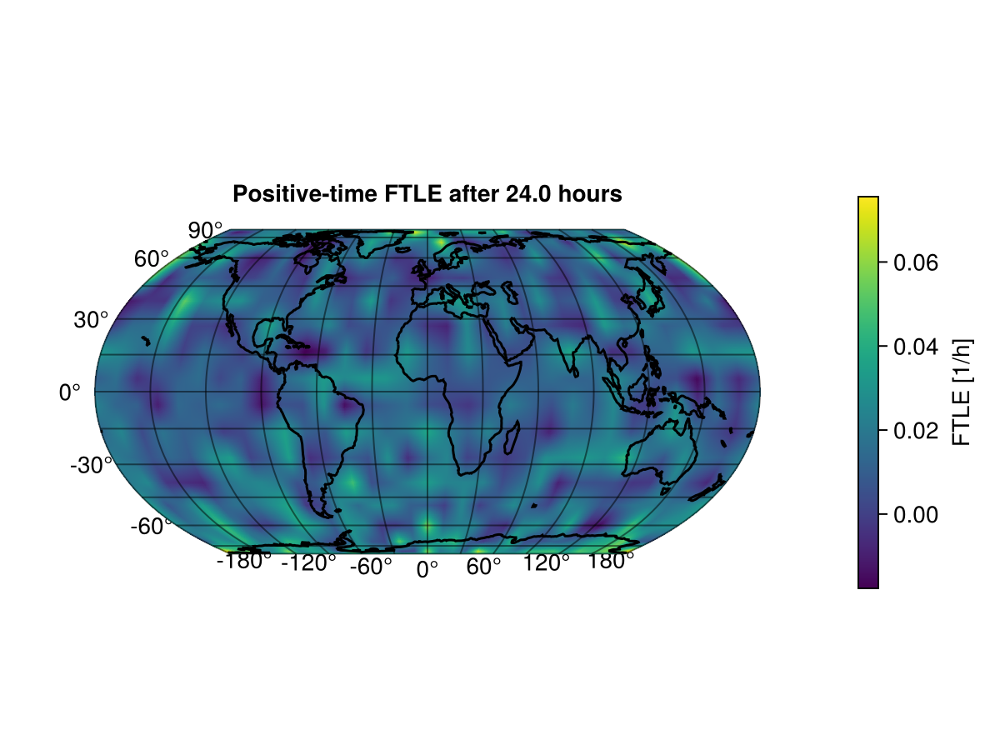
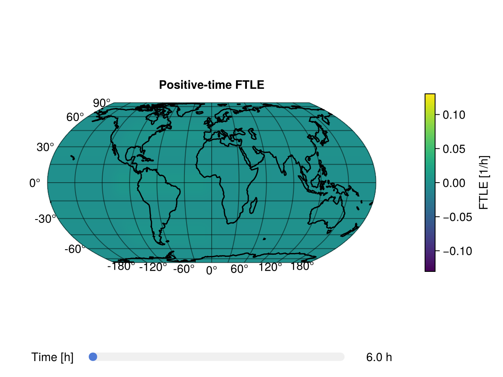

SpeedyWeatherFTLE
SpeedyWeatherFTLE computes finite-time Lyapunov exponents (FTLEs) from SpeedyWeather particle trajectories. The package can run a particle-tracking simulation from prescribed velocity fields, compute positive- or negative-time FTLE, reuse saved ParticleTracker NetCDF files, and convert FTLE arrays into RingGrids.Field objects for plotting.
What You Usually Need
Most workflows start with positive_FTLE or negative_FTLE. Pass zonal and meridional velocity fields on the same RingGrids grid and ask for an FTLEResult when you want named fields plus metadata for plotting and post-processing.
using CairoMakie
using Random
using RingGrids
using SpeedyWeatherFTLE
Random.seed!(42)
spatial_grid = FullGaussianGrid(8)
u = 25 * rand(spatial_grid)
v = 25 * rand(spatial_grid)
result = positive_FTLE(
u,
v;
simulation_days = 1,
dynamics = false,
rint_hours = 6,
return_result = true,
time_indices = :nonzero,
)
size(result)(512, 4)The result stores the selected FTLE time series, the SpeedyWeather spectral grid, the selected output times in hours, and run metadata:
result.direction, result.time_hours, result.dist_km(:positive, [6.0, 12.0, 18.0, 24.0], 10.0)To plot the final selected output time, pass the result directly to surface_plot.
fig, ax, sp, cb = surface_plot(
result;
title = "Positive-time FTLE after $(result.time_hours[end]) hours",
label = "FTLE [1/h]",
)
fig
For an interactive local time-series plot, use slider_plot. In the static documentation build the slider is rendered but not interactive; with GLMakie locally it is interactive.
fig, ax, sp, cb = slider_plot(
result;
title = "Positive-time FTLE",
colorbar_label = "FTLE [1/h]",
)
fig
Guide
- Concepts and Data Layout: FTLE direction, units, particle layout, and
time_indices. - Running Simulations: high-level simulation workflows with
get_FTLE,positive_FTLE, andnegative_FTLE. - Particle Files: saving and reusing SpeedyWeather
ParticleTrackerNetCDF output. - Plotting: converting arrays to fields and using
surface_plot,slider_plot,animate_slider_plot, andglobe_plot. - API Reference: generated reference documentation for exported functions and types.
Development
From the repository root, instantiate the project once:
] instantiateRun the package tests with:
] testBuild these docs locally with:
julia --project=docs docs/make.jl